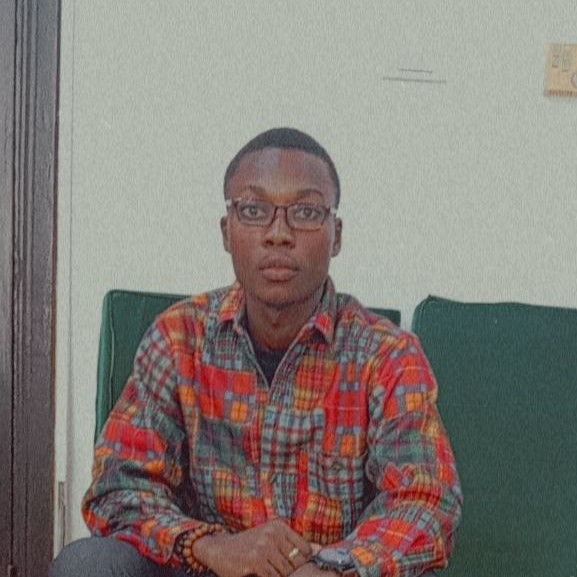

Moi en bref

Je suis data scientist avec une passion pour le storytelling. Je crois que les mots et les données sont les deux outils les plus puissants pour changer le monde.
Je passe la plupart de mon temps devant un écran d'ordinateur. La journée, je programme généralement pour extraire des insights à partir de grands ensembles de données. Mes compétences incluent l'analyse de données, la visualisation et le machine learning.
J'ai développé un sens aigu de la résolution de problèmes et j'apprécie les défis occasionnels.
Je travaille souvent sur des projets data science de bout en bout qui commencent par la collecte de données auprès de sources tierces et se terminent par la fourniture d'insights métiers sous forme de segments clients.
Le soir, je prends du temps pour travailler sur mes passions. J'écris des articles que je publie sur Internet.
Parfois, je crée des projets personnels et j'en rédige des tutoriels. J'aime aussi me rendre sur des sites comme HackerRank
pour essayer leurs défis de programmation.
Vous pouvez consulter certains de mes projets et articles dans la section ci-dessous. Je mettrai des liens vers leurs dépôts GitHub, alors n'hésitez pas à télécharger mon code et à l'expérimenter.
La majeure partie de ma formation provient de plateformes en ligne.
J'ai téléchargé des e-books, suivi des cours sur edX et Coursera, et passé d'innombrables heures sur des sites comme HackerRank et FreeCodeCamp. Je suis reconnaissant envers les éducateurs en ligne qui m'ont donné l'opportunité d'apprendre ces choses et qui ont démocratisé l'éducation.
Pour redonner à la communauté, je crée des tutoriels détaillant ce que j'ai appris.
Je produis du code de démarrage pour des projets de data science et de visualisation que je publie pour tous.
Si vous aspirez à devenir data scientist, n'hésitez pas à consulter ces tutoriels sur mon blog.